물류관리사-2교시 (2014-06-28 기출문제)
1과목: 보관하역론
1. 다음 중 보관의 기본 원칙과 거리가 가장 먼 것은?
- 중량 특성의 원칙
- 작업자 안전의 원칙
- 선입선출의 원칙
- 형상 특성의 원칙
- 동일성ㆍ유사성의 원칙
(정답률: 70%)

2. 파렛트는 사용재료, 형태, 형식, 용도 등에 따른 유형으로 구분할 수 있다. 다음 중 용도에 따른 유형이 아닌 것은?
- Disposable Pallet
- Pool Pallet
- Exchange Pallet
- Flat Pallet
- Reusable Pallet
(정답률: 알수없음)
3. 다음과 같은 조건에서 제품을 보관하기 위해 필요한 창고의 바닥 면적(m2 )은?
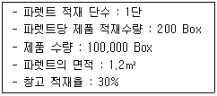
- 500
- 600
- 750
- 1,000
- 2,000
(정답률: 알수없음)
4. 파렛트 풀 시스템(Pallet Pool System)의 운영방식에서 렌탈방식의 단점이 아닌 것은?
- 이용자가 교환을 위한 동질ㆍ동수의 파렛트를 준비해 놓을 필요가 없다.
- 파렛트를 인도하고 반환할 때 다소 복잡한 사무처리가 필요하다.
- 일부 화주의 편재(쏠림현상) 등에 의하여 파렛트가 쌓이는 곳이 발생한다.
- 편재(쏠림현상)되어 쌓여지는 파렛트는 렌탈회사 측면에서는 부담이 된다.
- 렌탈회사의 데포(Depot)에서 화주까지의 공 파렛트 수송이 필요하다.
(정답률: 알수없음)
5. 창고관리시스템(WMS; Warehouse Management System)의 정량적 효과로 옳지 않은 것은?
- 입ㆍ출고 운영 측면에서는 피킹, 패킹의 오류를 감소시키고, 입고 검품 시간을 단축시킨다.
- 재고 측면에서는 재고를 감축시키고, 재고파악의 정확성을 높인다.
- 비용 측면에서는 노무비용, 클레임비용 및 사무비용을 감소시킨다.
- 공간 측면에서는 IT(Information Technology)를 활용한 창고관리에 중점을 두기 때문에 공간 활용도와 가용 공간이 감소된다.
- 작업 측면에서는 생산성이 증가된다.
(정답률: 알수없음)
6. A기업은 연간 수요가 400개인 제품을 경제적 주문량 모형(EOQ; Economic Order Quantity)을 이용하여 발주하고 있다. 제품의 개당 가격은 50원, 1회 발주비용이 20원, 단위당 연간 재고유지비용은 제품가격의 20%이다. A기업의 연간 최적 발주횟수(회)는?
- 5
- 10
- 15
- 20
- 25
(정답률: 알수없음)
7. 배송센터를 구축할 경우 좋은 점을 모두 고른 것은?
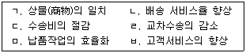
- ㄱ, ㄷ, ㅁ
- ㄴ, ㄹ, ㅂ
- ㄱ, ㄴ, ㄷ
- ㄴ, ㄷ, ㄹ, ㅁ
- ㄴ, ㄷ, ㄹ, ㅁ, ㅂ
(정답률: 알수없음)
8. 물류 하역작업 개선을 위한 3S를 모두 바르게 나열한 것은?
- Systemization, Standardization, Specialization
- Simplification, Standardization, Specialization
- Simplification, Standardization, Systemization
- Simplification, Systemization, Scientification
- Simplification, Standardization, Scientification
(정답률: 19%)
9. 각 4개 지점간의 거리와 각 지점에서의 취급 물동량이 다음과 같을 때, 거리만을 고려한 최적의 물류거점의 입지(ㄱ)와 거리 및 물동량을 고려한 최적의 물류거점의 입지(ㄴ)로 옳은 것은?
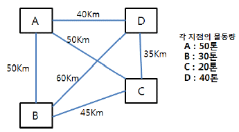
- ㄱ: A, ㄴ: B
- ㄱ: B, ㄴ: A
- ㄱ: B, ㄴ: C
- ㄱ: C, ㄴ: A
- ㄱ: C, ㄴ: B
(정답률: 46%)
10. 소매상 B기업의 A제품에 대한 연간 판매량은 10,000개이다. A제품을 도매상에 발주하면 6일 후에 도착한다고 한다. 이 기업의 연간 영업가능일은 100일이고 안전재고로 200개를 보유하고 있어야 한다면 재주문점(Reorder Point)은 몇 개인가?
- 600
- 650
- 700
- 750
- 800
(정답률: 34%)
11. 창고 수가 증가할 때 고객서비스 수준 및 관련 비용과의 연관성에 관한 설명이 옳은 것을 모두 고른 것은?
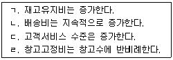
- ㄱ, ㄴ
- ㄱ, ㄷ
- ㄴ, ㄷ
- ㄴ, ㄹ
- ㄱ, ㄷ, ㄹ
(정답률: 알수없음)
12. A제품의 조달기간은 3주였으나 외부상황의 변동에 따라 조달기간이 12주로 변경되었고, 수요의 표준편차가 2배로 확대되었다면 A제품의 안전재고의 변화량은? (단, 다른 조건은 동일하다.)
- 기존의 2배 증가
- 기존의 3배 증가
- 기존의 4배 증가
- 기존의 8배 증가
- 기존의 16배 증가
(정답률: 37%)
13. 물류시설에 관한 설명으로 옳지 않은 것은?
- CFS(Container Freight Station)에는 FCL(Full Container Load)화물이 보관되어 있으며, CY(Container Yard)에서는 LCL(Less than Container Load)화물이 혼재작업 후 FCL화물로 만들어져 CFS로 보내진다.
- 스톡 포인트(Stock Point)는 대도시, 지방중소도시에 합리적인 배송을 실시할 목적으로 설립된 유통의 중계기지이다.
- 보세구역은 지정보세구역ㆍ특허보세구역 및 종합보세구역으로 구분하고, 지정보세구역은 지정장치장 및 세관검사장으로 구분한다.
- ICD(Inland Container Depot)는 산업단지와 항만사이를 연결하여 컨테이너화물의 유통을 원활히 하기 위한 대규모 물류단지로서 복합물류터미널의 역할을 수행한다.
- 특허보세구역은 보세창고ㆍ보세공장ㆍ보세전시장ㆍ보세건설장 및 보세판매장으로 구분한다.
(정답률: 70%)
14. 승용차, 목재, 기계류 같은 중량화물을 운송하기 위해 상부 구조가 없이 기둥만 두어 전후좌우에서 사용할 수 있는 개방형 컨테이너는?
- Dry Bulk Container
- Flat Rack Container
- Dry Cargo Container
- Side Open Container
- Open Top Container
(정답률: 40%)
15. 다음의 설명에 모두 해당하는 물류시설은?
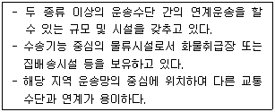
- 복합물류터미널
- 물류센터
- 공동집배송단지
- 중계센터
- 데포(Depot)
(정답률: 64%)
16. 다음과 같은 판매실적 정보와 6월에 대한 예측치가 있다. 7월의 실판매량과 오차가 가장 적은 F7값을 제시할 수 있는 예측기법은?
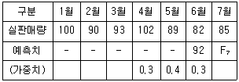
- 3개월 이동평균법
- 3개월 가중평균법
- 5개월 이동평균법
- 평활상수 0.3인 지수평활법
- 평활상수 0.4인 지수평활법
(정답률: 42%)
17. 화인에 관한 설명으로 옳지 않은 것은?
- 주표시(Main Mark)는 화인 중 가장 중요한 표시로서 다른 상품과 식별을 용이하게 하는 기호이다.
- 부표시(Counter Mark)는 내용물품의 직접 생산자 또는 수출대행사 등이 주표시의 위쪽이나 밑쪽에 기재하며 생략하는 경우도 있다.
- 품질표시(Quality Mark)는 내용품의 품질이나 등급 등을 표시하는 것으로 주표시의 위쪽이나 밑에 기재한다.
- 주의표시(Care Mark)는 취급상의 주의를 위하여 붉은색을 사용하여 표시하고 종류는 한가지다.
- 수량표시(Quantity Mark)는 단일포장이 아닌 2개 이상의 경우 번호를 붙여 몇 번째에 해당되는지를 표시한다.
(정답률: 10%)
18. 물류센터의 레이아웃(Layout) 설계시 고려할 내용으로 옳지 않은 것은?
- 물품의 취급 횟수를 감소시킨다.
- 물품, 운반기기 및 작업자의 역행ㆍ교차는 피한다.
- 물품의 흐름 과정에서 높낮이 차이의 크기와 횟수를 줄인다.
- 운반기기, 랙, 통로입구 및 기둥간격의 모듈화는 피한다.
- 물품, 통로, 운반기기 및 작업자 등의 흐름에 있어 가능한 한 직진성에 중점을 둔다.
(정답률: 50%)
19. JIT(Just In Time)와 자재소요량계획(MRP; Material Requirements Planning)에 관한 설명으로 옳은 것을 모두 고른 것은?
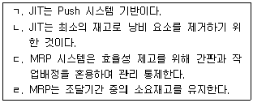
- ㄱ, ㄴ
- ㄱ, ㄷ
- ㄱ, ㄹ
- ㄴ, ㄷ
- ㄴ, ㄹ
(정답률: 60%)
20. 하역의 개념 및 정의에 관한 설명으로 옳지 않은 것을 모두 고른 것은?
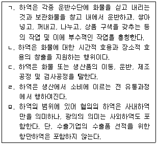
- ㄱ, ㄹ
- ㄴ, ㄷ
- ㄷ, ㅁ
- ㄱ, ㄴ, ㄷ
- ㄱ, ㄴ, ㄷ, ㄹ
(정답률: 17%)
21. 다음과 같은 작업 조건일 때 물류센터에서 효율적인 하역작업에 필요한 포크리프트의 수는?
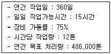
- 6대
- 8대
- 10대
- 12대
- 14대
(정답률: 46%)
22. 하역 합리화 원칙 중 기본원칙이 아닌 것은?
- 최대취급의 원칙
- 경제성의 원칙
- 활성화의 원칙
- 중력이용의 원칙
- 기계화의 원칙
(정답률: 47%)
23. 일반적으로 물류센터의 규모를 계획할 경우 순서를 옳게 나열한 것은?
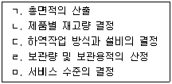
- ㄴ → ㅁ → ㄷ → ㄹ → ㄱ
- ㄴ → ㅁ → ㄹ → ㄷ → ㄱ
- ㄹ → ㄷ → ㅁ → ㄴ → ㄱ
- ㅁ → ㄴ → ㄹ → ㄷ → ㄱ
- ㅁ → ㄹ → ㄷ → ㄱ → ㄴ
(정답률: 31%)
24. 제품상자의 크기가 가로 25 cm, 세로 50 cm, 높이 20 cm이다. 이를 T-11형 표준규격 파렛트에 평면적을 최대한 많이 활용하여 적재할 수 있는 파렛트 적재방법과 적재율은 약 얼마인가? (단, 적재율은 소수점 첫째 자리에서 반올림한다.)
- 핀휠 적재, 75%
- 핀휠 적재, 78%
- 스플릿 적재, 81%
- 스플릿 적재, 83%
- 블록 적재, 85%
(정답률: 알수없음)
25. 물류센터에 관한 설명으로 옳지 않은 것은?
- 일시적 또는 장기적 물품보관을 통하여 공급과 수요의 완충적인 기능을 한다.
- 단순한 보관기능 외에도 입고품의 검품, 검수, 유통가공, 분류 및 포장작업을 수행한다.
- 종래의 창고나 배송센터보다는 규모가 크므로 충분한 취급량을 확보하지 못할 경우 채산성이 악화될 수 있다.
- 제품의 설계 및 제조와 판매 기능을 수행한다.
- 품절을 방지하기 위한 제품 확보 기능을 한다.
(정답률: 알수없음)
26. 유니트로드시스템(Unit Load System)과 가장 관련이 없는 것은?
- 일관파렛트화
- 컨테이너
- 파렛트
- 하역의 기계화
- 낱포장
(정답률: 알수없음)
27. A기업이 판매하는 상품B의 지난해 연간 매출액은 120억원, 순이익률은 8%, 연간 재고유지비용은 매출액의 2%, 연간 평균재고금액은 재고유지비용의 10배였다. 지난해 상품B의 재고회전율은?
- 1
- 2
- 5
- 8
- 10
(정답률: 30%)
28. 물류터미널의 일반적인 기능과 거리가 가장 먼 것은?
- 집화 기능
- 혼재 기능
- 보관 기능
- 전시 기능
- 가공 기능
(정답률: 55%)
29. 컨테이너 항만이 건설되면 물동량 증가를 대비하기 위해 항만배후단지를 건설하고 다양한 제조업체와 물류업체를 유치한다. 신항만 배후단지에 부지를 분양받은 A업체가 물류창고 건설 일정계획을 수립할 때 사용되는 가장 적합한 기법은?
- 무게중심법
- 총비용비교법
- 손익분기 도표법
- 체크리스트를 이용한 요소분석법
- PERT/CPM(Program Evaluation and Review Technique/Critical Path Method)
(정답률: 20%)
30. 자재소요량계획(MRP; Material Requirements Planning)의 주요 입력요소를 모두 고른 것은?
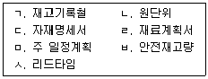
- ㄱ, ㄷ, ㄹ, ㅅ
- ㄱ, ㄷ, ㄹ, ㅂ
- ㄴ, ㄷ, ㅁ, ㅂ
- ㄷ, ㄹ, ㅁ, ㅅ
- ㄱ, ㄷ, ㅁ, ㅂ, ㅅ
(정답률: 30%)
31. 다음은 포장에 관한 설명이다. ( )안에 들어갈 용어로 옳은 것은?
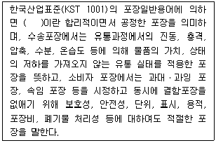
- 규격포장
- 적정포장
- 집합포장
- 통합포장
- 적합포장
(정답률: 55%)
32. 자재소요량계획(MRP; Material Requirements Planning)에서 A제품은 2개의 부품X와 3개의 부품Y로 조립된다. A제품의 총수요는 30개이고, 부품X의 예정입고량이 10개이며 가용재고는 없고, 부품Y의 예정입고량은 15개이고 가용재고가 5개일 때 부품X와 부품Y의 순 소요량이 몇 개인지 순서대로 옳게 나열한 것은?
- 50, 50
- 50, 60
- 50, 70
- 60, 70
- 60, 90
(정답률: 알수없음)
33. 상단이 지지된 마스트를 가지며 마스트 또는 붐(Boom) 위 끝에서 화물을 달아 올리는 지브(Jib)붙이 크레인은?
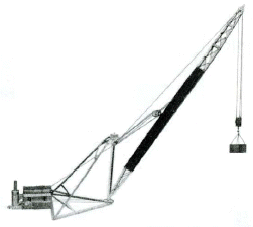
- 레벨러핑 크레인 (Level Luffing Crane)
- 데릭 (Derrick)
- 언로더 (Unloader)
- 오버헤드 트레블링 크레인 (Overhead Travelling Crane)
- 갠트리 크레인 (Gantry Crane)
(정답률: 46%)
34. 자재를 운반하기 위하여 사용되는 컨베이어에 관한 일반적인 설명으로 옳은 것은?
- 고정된 장소 간에 운반량이 많을 시에 적합하다.
- 바닥공간을 다른 용도로 활용하기 위하여 주로 작업자의 머리 위의 공간을 이용한다.
- 포크리프트 등의 산업용 차량보다는 유연하게 장소를 이동하면서 사용한다.
- 중량물을 운반하는데 적합한 기기이다.
- 가장 유연한 운송장비로 주로 제품별 배치보다는 공정별 배치에서 이용된다.
(정답률: 37%)
35. 포크리프트에 관한 설명으로 ( )안에 각각 적합한 장비를 올바르게 나열한 것은?
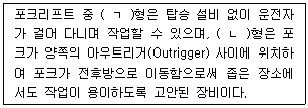
- ㄱ: Walkie, ㄴ: Counterbalanced
- ㄱ: Counterbalanced, ㄴ: Reach
- ㄱ: Walkie, ㄴ: Reach
- ㄱ: 3 Wheel, ㄴ: Counterbalanced
- ㄱ: Reach, ㄴ: 3 Wheel
(정답률: 50%)
36. 화주의 측면에서 자가창고와 비교하여 영업창고의 장점만 모두 고른 것은?
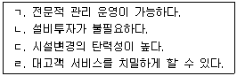
- ㄱ, ㄴ
- ㄱ, ㄹ
- ㄷ, ㄹ
- ㄱ, ㄴ, ㄷ
- ㄱ, ㄴ, ㄷ, ㄹ
(정답률: 10%)
37. 항공용 단위탑재 수송용기에 관한 설명이다. ( )안에 들어갈 용어로 옳은 것은?
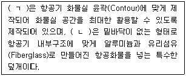
- ㄱ: Certified Aircraft Container, ㄴ: Cattle Pen
- ㄱ: Igloo, ㄴ: GOH(Garment On Hanger)
- ㄱ: Certified Aircraft Container, ㄴ: Igloo
- ㄱ: Cattle Pen, ㄴ: Igloo
- ㄱ: Certified Aircraft Container, ㄴ: GOH
(정답률: 50%)
38. 파렛트 종류에 관한 설명으로 옳지 않은 것은?
- 기둥 파렛트(Post Pallet): 상부구조물이 없는 파렛트와 달리 상부에 기둥이 있는 파렛트로 기둥은 고정식, 조립식, 접철식, 연결 테두리식이 있다.
- 롤 상자형 파렛트(Roll Box Pallet): 받침대 밑면에 바퀴가 달린 롤 파렛트 중 상부구조가 박스인 파렛트로 최근에는 배송용으로 많이 사용한다.
- 사일로 파렛트 (Silo Pallet): 액체를 담는데 사용되며 밀폐된 상측면과 뚜껑을 가지며 하부에 개폐장치가 있는 상자형 파렛트이다.
- 시트 파렛트(Sheet Pallet): 1회용 파렛트로 목재나 플라스틱으로 제작되어 가격이 저렴하고 가벼우나 하역을 위하여 Push-Pull 장치를 부착한 포크리프트가 필요하다.
- 스키드 파렛트 (Skid Pallet): 포크리프트나 핸드리프트로 하역할 수 있도록 만들어진 단면형 파렛트이다.
(정답률: 알수없음)
39. A업체는 다음의 자료로 경제적 주문량 모형(EOQ)을 이용하여 특정 부품의 재고정책을 수립하려고 한다. 이러한 재고정책을 운영하기 위한 연간 최소 총비용(원)은? (단, 총비용은 재고유지비용과 주문 비용의 합이다.)
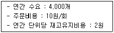
- 200
- 400
- 600
- 800
- 1,000
(정답률: 30%)
40. 관련품목을 한 장소에 모아 보관하는 원칙으로 출고 품목의 다양화에 따른 보관상의 곤란을 예상하여 물품정리가 용이하도록 하는 원칙은?
- 선입선출의 원칙
- 회전대응 보관의 원칙
- 네트워크 보관의 원칙
- 통로대면 보관의 원칙
- 위치표시의 원칙
(정답률: 알수없음)
2과목: 물류관련법규
41. 물류정책기본법령상 물류사업의 범위에 관한 설명으로 옳지 않은 것은?
- 화물자동차운송가맹사업은 육상화물운송업에 해당한다.
- 항만하역사업은 항만운송사업에 해당한다.
- 파이프라인운송업은 물류서비스업에 해당한다.
- 물류단지의 운영업은 물류터미널운영업에 해당한다.
- 화물의 하역, 포장, 가공, 조립, 상표부착, 프로그램 설치, 품질검사 등 부가적인 물류업은 화물취급업에 해당한다.
(정답률: 67%)
42. 물류정책기본법령상 물류현황조사에 관한 설명으로 옳은 것은?
- 물류현황조사는 국토교통부장관이 해양수산부장관과 공동으로 실시하여야 한다.
- 물류현황조사는「국가통합교통체계효율화법」에 따른 국가교통조사와 중복되게 할 수 있다.
- 해양수산부장관이 시ㆍ도지사에게 물류현황조사에 필요한 자료의 제출을 요청한 경우 특별한 사정의 유무에 관계없이 반드시 이에 따라야 한다.
- 국토교통부장관이 물류현황조사지침을 작성하려는 경우에는 미리 관계 중앙행정기관의 장과 협의하여야 한다.
- 국토교통부장관의 물류현황조사와 별도로 시ㆍ도지사가 지역물류현황조사를 실시할 수 없다.
(정답률: 47%)
43. 물류정책기본법령상 국가물류기본계획의 수립에 관한 설명으로 옳지 않은 것은?
- 국토교통부장관 및 해양수산부장관은 10년 단위의 국가물류기본계획을 5년마다 공동으로 수립하여야 한다.
- 국토교통부장관 및 해양수산부장관은「물류정책기본법」에 따라 지원을 받지 않는 비(非)물류기업에 대하여도 국가물류기본계획의 수립ㆍ변경을 위하여 필요한 경우 관련 기초자료의 제출을 요청하여야 한다.
- 국가물류기본계획은「국토기본법」에 따라 수립된 국토종합계획과 조화를 이루어야 한다.
- 국토교통부장관 및 해양수산부장관은 국가물류기본계획을 시행하기 위하여 연도별 시행계획을 매년 공동으로 수립하여야 한다.
- 국토교통부장관 및 해양수산부장관은 국가물류기본계획을 수립하는 경우 관계 중앙행정기관의 장및 시ㆍ도지사와 협의한 후 국가물류정책위원회의 심의를 거쳐야 한다.
(정답률: 75%)
44. 물류정책기본법령상 국가물류정책위원회의 심의를 거쳐야 하는 국가물류기본계획의 중요한 변경사항에 해당하는 것은?
- 국가물류정책의 목표와 주요 추진전략에 관한 사항
- 국가물류기본계획과 관련된 국가기간교통망계획의 변경을 반영한 물류시설의 투자 우선 순위에 관한 사항
- 국가물류기본계획과 관련된 물류시설개발종합계획의 변경을 반영한 국제물류의 촉진에 관한 기본적인 사항
- 국가물류기본계획과 관련된 국가기간교통망계획의 변경을 반영하기 위해 국가물류정책위원회의 심의가 필요하다고 인정하는 사항
- 국가물류기본계획과 관련된 국토종합계획의 변경을 반영한 물류장비의 투자 우선 순위에 관한 사항
(정답률: 40%)
45. 물류정책기본법령상 물류공동화 및 자동화 촉진에 관한 설명으로 옳지 않은 것은?
- 물류공동화를 추진하는 물류관련 단체에게 예산의 범위에서 필요한 자금을 지원할 수 있는 기관은 국토교통부장관ㆍ해양수산부장관에 한한다.
- 국토교통부장관은 화주기업이 물류공동화를 추진하는 경우 물류 관련 단체와 공동으로 추진하도록 권고할 수 있다.
- 해양수산부장관은 물류공동화를 확산하기 위하여 필요한 경우 시범사업을 선정하여 운영할 수 있다.
- 국토교통부장관은 물류공동화를 확산하기 위하여 필요한 경우 시범지역을 지정할 수 있다.
- 국토교통부장관은 물류기업이 물류자동화를 위하여 물류시설을 교체하려는 경우에 필요한 자금을 지원할 수 있다.
(정답률: 60%)
46. 물류정책기본법령상 물류표준화에 관한 설명으로 옳지 않은 것은?
- 국토교통부장관은 물류표준화에 관한 업무를 효과적으로 추진하기 위하여 필요하다고 인정하는 경우에는 산업통상자원부장관에게「산업표준화법」에 따른 한국산업표준의 제정ㆍ개정 또는 폐지를 요청할 수 있다.
- 국토교통부장관ㆍ해양수산부장관 또는 산업통상자원부장관은 물류기업 등에게 물류표준장비의 사용자에 대하여 우선구매 등의 우대조치를 할 것을 요청할 수 있다.
- 국토교통부장관은 화주기업이 기업물류비 산정지침에 따라 물류비를 관리하도록 권고할 수 있다.
- 물류회계의 표준화를 위한 기업물류비 산정지침에는 물류비 관련 용어 및 개념에 대한 정의가 포함되어야 한다.
- 국토교통부장관은 해양수산부장관 및 시ㆍ도지사와 협의하여 기업물류비 산정지침을 작성하여 고시하여야 한다.
(정답률: 알수없음)
47. 물류정책기본법령상 국가 또는 지방자치단체가 소요자금의 일부를 융자하거나 부지의 확보를 위한 지원 등을 할 수 있는 인증종합물류기업의 대상사업이 아닌 것은?
- 물류시설의 확충
- 공제사업
- 환경친화적 물류활동
- 해외시장의 개척
- 첨단물류기술의 개발 및 적용
(정답률: 40%)
48. 물류정책기본법령상 환경친화적 물류의 촉진에 관한 설명으로 옳지 않은 것은?
- 시ㆍ도지사가 환경친화적 물류의 촉진을 위한 지원을 하려는 경우에는 중복을 방지하기 위하여 미리 국토교통부장관 및 해양수산부장관과 협의하여야 한다.
- 국토교통부장관ㆍ해양수산부장관 또는 시ㆍ도지사는 물류기업 및 화주기업에 대하여 환경친화적인 운송수단으로의 전환을 권고하고 지원할 수 있다.
- 해양수산부장관은 우수녹색물류실천기업에 지정증을 발급하고, 지정을 나타내는 표시를 정하여 우수녹색물류실천기업이 사용하게 할 수 있다.
- 녹색물류협의기구는 위원장을 포함한 15명 이상 30명 이하의 위원으로 구성한다.
- 녹색물류협의기구의 위원장은 위원 중에서 호선한다.
(정답률: 50%)
49. 물류시설의 개발 및 운영에 관한 법령상 물류단지 개발사업의 시행자로 지정받을 수 있는 자를 모두 고른 것은?
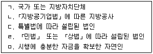
- ㄱ
- ㄱ, ㄴ
- ㄱ, ㄴ, ㄷ
- ㄱ, ㄴ, ㄷ, ㄹ
- ㄱ, ㄴ, ㄷ, ㄹ, ㅁ
(정답률: 64%)
50. 물류시설의 개발 및 운영에 관한 법령상 물류창고업에 관한 설명으로 옳은 것은?
- 물류창고의 구조 또는 설비 등 물류창고업의 등록기준에 필요한 사항은 국토교통부장관이 정한다.
- 산업통상자원부장관은 화주가 편리하게 이용할 수 있는 시설과 장비를 갖추고 물류창고의 운영에 관한 정보를 제공하며 화물의 안전한 보관 등을 통하여 화주에 대한 서비스 향상에 기여하는 물류창고업자를 우수업체로 인증할 수 있다.
- 물류창고를 소유 또는 임차하여 물류창고업을 경영하려는 자는 산업통상자원부장관에게 등록하여야 한다.
- 국가 또는 지방자치단체는 물류창고업자 또는 그 사업자단체에 대하여 물류창고업의 운영상 필요한 운전자금의 전부를 보조 또는 융자할 수 있다.
- 국토교통부장관ㆍ해양수산부장관 또는 지방자치단체의 장은 거짓이나 부정한 방법으로 보조금을 교부받은 경우 물류창고업자에게 보조금의 반환을 명하여야 하며 이에 따르지 아니하면 국세 또는 지방세 체납처분의 예에 따라 회수할 수 있다.
(정답률: 알수없음)
51. 물류시설의 개발 및 운영에 관한 법령상 물류터미널사업에 관한 설명으로 옳지 않은 것은?
- 「항만법」제2조 제5호의 항만시설 중 항만구역 안에 있는 화물하역시설 및 화물보관ㆍ처리 시설을 경영하는 사업은 물류터미널사업에 해당한다.
- 「항공법」제2조 제8호의 공항시설 중 공항 구역 안에 있는 화물운송을 위한 시설과 그 부대시설 및 지원시설을 경영하는 사업은 물류터미널사업에 해당하지 않는다.
- 「철도사업법」제2조 제8호에 따른 철도사업자가 그 사업에 사용하는 화물운송ㆍ하역 및 보관 시설을 경영하는 사업은 물류터미널사업에 해당하지 않는다.
- "복합물류터미널사업"이란 두 종류 이상의 운송수단간의 연계운송을 할 수 있는 규모 및 시설을 갖춘 물류터미널사업을 말한다.
- "물류터미널사업"이란 물류터미널을 경영하는 사업으로서 복합물류터미널사업과 일반물류터미널사업을 말한다.
(정답률: 60%)
52. 물류시설의 개발 및 운영에 관한 법령상 물류단지 개발사업에 필요한 토지면적의 3분의 2 이상을 매입하여야 토지 등을 수용하거나 사용할 수 있는 물류단지개발사업의 시행자는?
- 국가 또는 지방자치단체
- 대통령령으로 정하는 공공기관
- 「지방공기업법」에 따른 지방공사
- 「민법」또는「상법」에 따라 설립된 법인
- 특별법에 따라 설립된 법인
(정답률: 50%)
53. 물류시설의 개발 및 운영에 관한 법령상 물류단지 안에서의 행위의 제한에 관한 설명으로 옳은 것은?
- 물류단지 안에서 건축물의 건축, 공작물의 설치, 토지의 형질변경, 토석의 채취, 토지분할, 물건을 쌓아놓는 행위 등 대통령령으로 정하는 행위를 하려는 자는 국토교통부장관의 허가를 받아야 한다.
- 물류단지의 지정 및 고시 당시 이미 관계 법령에 따라 행위허가를 받았거나 허가를 받을 필요가 없는 행위에 관하여 그 공사 또는 사업에 착수한 자는 대통령령으로 정하는 바에 따라 시장ㆍ군수ㆍ구청장에게 신고한 후 이를 계속 시행할 수 있다.
- 물류단지 안에서 건축물의 건축, 공작물의 설치, 토지의 형질변경, 토석의 채취, 토지분할, 물건을 쌓아놓는 행위 등을 법령에 따라 허가받은 경우에 이를 변경하려는 때에는 신고로 이를 대체할 수 있다.
- 국토교통부장관은 물류단지 안에서 허가를 받지 않고 죽목의 식재를 한 자에게 원상회복을 명할 수 있다.
- 물류단지 안에서 건축물의 건축, 공작물의 설치, 토지의 형질변경, 토석의 채취, 토지분할, 물건을 쌓아놓는 행위 등의 허가에 관하여「물류정책기본법」에 규정된 것 외에는「국가통합교통체계효율화법」을 준용한다.
(정답률: 알수없음)
54. 물류시설의 개발 및 운영에 관한 법령상 물류터미널 개발의 지원에 관한 설명으로 옳은 것은?
- 국가 또는 지방자치단체는 물류터미널사업자가 물류터미널의 건설을 수행하는 경우에는 지분의 50% 이상을 확보하는 조건으로 소요자금의 일부를 지원할 수 있다.
- 국가 또는 지방자치단체는 물류터미널사업자가 설치한 물류터미널의 원활한 운영에 필요한 도로ㆍ철도ㆍ용수시설 등 대통령령으로 정하는 기반시설의 설치 또는 개량에 필요한 예산을 지원할 수 있다.
- 국가 또는 지방자치단체는 물류터미널사업자가 물류터미널의 위치를 변경하고자 할 때 소요자금 전부의 예치를 조건으로 부지의 확보를 위한 행정지원을 할 수 있다.
- 지방자치단체는 물류터미널사업자가 설치한 물류터미널의 원활한 운영에 필요한 도로ㆍ철도ㆍ용수시설 등 기반시설의 설치 또는 개량에 필요한 예산을 전액 부담하여야 한다.
- 국토교통부장관은 사업의 필요에 의하여 부지확보 및 도시ㆍ군계획시설을 설치할 수 있다.
(정답률: 64%)
55. 물류시설의 개발 및 운영에 관한 법령상 복합물류 터미널사업의 등록의 결격사유에 해당하지 않는 것은?
- 「물류시설의 개발 및 운영에 관한 법률」을 위반하여 벌금형 이상을 선고받은 후 2년이 지나지 아니한 자
- 복합물류터미널사업 등록의 취소처분을 받은 후 2년이 지나지 아니한 자
- 법인으로서 그 임원 중에 파산선고를 받고 복권되지 아니한 자가 있는 경우
- 법인으로서 그 임원 중에「물류시설의 개발 및 운영에 관한 법률」을 위반하여 선고유예를 받은 자가 있는 경우
- 법인으로서 그 임원 중에「물류시설의 개발 및 운영에 관한 법률」을 위반하여 금고 이상의 실형을 선고받고 그 집행이 종료(집행이 종료된 것으로 보는 경우를 포함한다)되거나 집행이 면제된 날부터 2년이 지나지 아니한 자가 있는 경우
(정답률: 알수없음)
56. 물류시설의 개발 및 운영에 관한 법령상 물류단지 개발사업 시행자의 토지소유자에 대한 환지에 관한 설명으로 옳은 것은?
- 환지를 받을 수 있는 토지소유자는 물류단지개발계획에서 정한 유치업종에 적합한 물류단지시설을 설치하려는 자로서 물류단지의 지정ㆍ고시일 현재 물류단지개발계획에서 정한 전체공급면적의 3분의 2이상의 토지를 소유한 자로 한다.
- 환지의 대상이 되는 종전 토지의 가액은 보상공고시 시행자가 제시한 협의를 위한 보상금액으로 하고, 환지의 가액은 해당 물류단지의 물류단지시설용지의 공시지가를 기준으로 한다.
- 환지면적은 종전의 토지면적을 기준으로 하되, 지역여건 및 물류단지의 수급 상황 등을 고려하여 그 면적을 늘릴 수는 있으나 줄일 수는 없다.
- 종전의 토지가액과 환지가액과의 차액은 국채로 정산하여야 한다.
- 시행자는 물류단지 안의 토지를 소유하고 있는 자가 물류단지개발계획에서 정한 물류단지시설을 운영하려는 경우에는 그 토지를 포함하여 물류단지개발사업을 시행할 수 있으며, 해당 사업이 완료된 후 대통령령으로 정하는 바에 따라 해당 토지소유자에게 환지(換地)하여 줄 수 있다.
(정답률: 55%)
57. 화물자동차 운수사업법령상 적재물배상 책임보험ㆍ공제의 의무가입자 및 보험회사 또는 적재물배상 책임 공제사업을 하는 자가 적재물배상 책임보험 또는 공제의 전부 또는 일부를 해제하거나 해지할 수 있는 경우에 해당하지 않는 것은?
- 화물자동차 운송사업을 휴업하거나 폐업한 경우
- 증차로 인하여 화물자동차 운송사업의 허가사항이 변경된 경우
- 적재물배상보험등에 이중으로 가입되어 하나의 책임보험계약등을 해제하거나 해지하려는 경우
- 화물자동차 운송주선사업의 허가가 취소된 경우
- 보험회사등이 파산 등의 사유로 영업을 계속할 수 없는 경우
(정답률: 42%)
58. 화물자동차 운수사업법령상 화물자동차 운송사업자의 차고지 설치에 관한 설명으로 옳지 않은 것은?
- 운송사업자는 주사무소가 서울특별시에 있는 경우 경기도에 있는 공영차고지를 차고지로 이용하는 경우에는 서울특별시에 차고지를 설치하지 않아도 된다.
- 운송사업자는 주사무소가 용인시에 있는 경우 경기도에 있는 공동차고지를 차고지로 이용하는 경우에는 용인시에 차고지를 설치하지 않아도 된다.
- 운송사업자는 주사무소가 포항시에 있는 경우 경상남도에 있는 공영차고지를 차고지로 이용하는 경우에는 포항시에 차고지를 설치하지 않아도 된다.
- 운송사업자는 주사무소가 부산광역시에 있는 경우 경상북도에 있는 화물자동차 휴게소를 차고지로 이용하는 경우에는 부산광역시에 차고지를 설치하지 않아도 된다.
- 운송사업자는 주사무소가 고양시에 있는 경우 서울특별시에 있는 화물터미널을 차고지로 이용하는 경우에는 고양시에 차고지를 설치하지 않아도 된다.
(정답률: 60%)
59. 화물자동차 운수사업법령상 화물자동차 운전자의 채용 및 교통안전의 기록ㆍ관리에 관한 설명으로 옳지 않은 것은?
- 운송사업자는 폐업을 하게 되었을 때에는 화물자동차 운전자의 경력에 관한 기록 등 관련 서류를 교통안전공단에 이관하여야 한다.
- 운송사업자는 화물자동차의 운전자를 채용할 때에는 근무기간 등 운전경력증명서의 발급을 위하여 필요한 사항을 기록ㆍ관리하여야 한다.
- 교통안전공단은 화물자동차 운전자의 교통사고 및 교통법규 위반사항의 기록ㆍ관리를 위하여 국토교통부장관이 정하여 고시하는 바에 따라 화물자동차 운전자의 교통안전 관리전산망을 구축ㆍ운영할 수 있다.
- 국토교통부장관은 화물자동차 운수사업의 운전업무종사자격을 갖추지 아니한 사람이 운송사업자의 화물을 운송하다가 발생한 인명사상사고에 대하여는 해당 시ㆍ도지사 및 사업자단체에게 그 내용을 제공하여야 한다.
- 운송사업자는 화물자동차 운전자를 채용하거나 채용된 화물자동차 운전자가 퇴직하였을 때에는 그 명단을 화물자동차 운수사업법에 따라 설립된 협회에 제출하여야 한다.
(정답률: 알수없음)
60. 화물자동차 운수사업법령상 화물자동차 운송사업의 양도ㆍ양수, 합병 및 상속에 관한 설명으로 옳은 것을 모두 고른 것은?
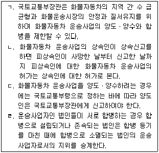
- ㄱ, ㄴ
- ㄱ, ㄷ
- ㄴ, ㄷ
- ㄴ, ㄹ
- ㄷ, ㄹ
(정답률: 알수없음)
61. 화물자동차 운수사업법령상 화물자동차 운송사업의 허가 취소, 정지, 감차에 관한 설명이다. ( )에 들어갈 내용으로 옳게 나열한 것은?
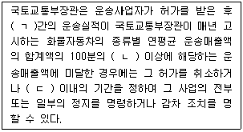
- ㄱ: 3개월 ㄴ: 5 ㄷ: 6개월
- ㄱ: 6개월 ㄴ: 5 ㄷ: 3개월
- ㄱ: 6개월 ㄴ: 5 ㄷ: 6개월
- ㄱ: 6개월 ㄴ: 10 ㄷ: 6개월
- ㄱ: 6개월 ㄴ: 15 ㄷ: 6개월
(정답률: 20%)
62. 화물자동차 운수사업법령상 화물자동차 휴게소 건설사업의 시행에 관한 설명으로 옳지 않은 것은?
- 사업시행자는 화물자동차 휴게소 건설에 관한 계획을 수립한 때에는 이를 공고하고, 관계 서류의 사본을 20일 이상 일반인이 열람할 수 있도록 하여야 한다.
- 사업시행자는 승인받은 건설계획 중 전체 사업시행 면적의 100분의 30의 면적감소에 따른 변경을 하려면 해당 승인권자의 변경승인을 받아야 한다.
- 「지방공기업법」에 따른 지방공사가 사업시행자인 경우에 사업시행자는 화물자동차 휴게소 건설에 관한 계획에 대하여 공고 및 열람을 마친 후 국토교통부장관의 승인을 받아야 한다.
- 사업시행자는 승인받은 건설계획 중 「측량ㆍ수로조사 및 지적에 관한 법률」제45조 제2호에 따른 지적확정측량의 결과에 따른 부지 면적의 변경을 하려면 해당 승인권자의 변경승인을 받지 않아도 된다.
- 사업시행자가 전체 사업을 분할하여 시행하는 경우 전체 사업면적이 변경되지 않으면 해당 분할 사업에서의 면적의 변경은 해당 승인권자의 변경 승인을 받지 않아도 된다.
(정답률: 알수없음)
63. 화물자동차 운수사업법령상 화물자동차 운송주선 사업자가 준수하여야 할 사항에 관한 설명으로 옳지 않은 것은?
- 운송가맹점인 운송주선사업자는 자기가 가입한 운송가맹사업자에게 소속된 운송가맹점에 대하여 화물운송을 주선할 수 있다.
- 운송주선사업자는 허가증에 기재된 상호만을 사용해야 한다.
- 운송주선사업자는 화주로부터 중개 또는 대리를 의뢰받은 화물에 대하여 다른 운송주선사업자에게 수수료나 그 밖의 대가를 받고 중개 또는 대리를 의뢰하여서는 아니 된다.
- 운송주선사업자는 자기 명의로 다른 사람에게 화물자동차 운송주선사업을 경영하게 할 수 없다.
- 운송주선사업자는 적재물배상보험 등에 가입한 상태에서 운송주선사업을 영위하여야 한다.
(정답률: 50%)
64. 화물자동차 운수사업법령상 다수의 보험회사 또는 적재물배상책임 공제사업을 하는 자가 공동으로 적재물배상 책임보험 또는 공제를 체결할 수 있는 사유에 해당하는 것을 모두 고른 것은?
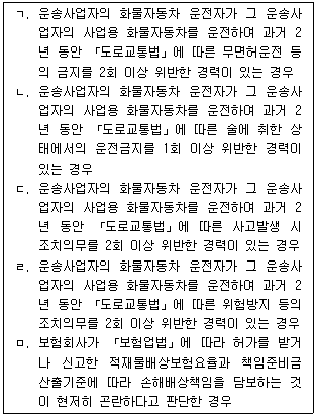
- ㄱ, ㄴ, ㄷ
- ㄱ, ㄷ, ㄹ
- ㄱ, ㄷ, ㅁ
- ㄴ, ㄹ, ㅁ
- ㄷ, ㄹ, ㅁ
(정답률: 알수없음)
65. 화물자동차 운수사업법령상 영농조합법인에 대한 자가용 화물자동차의 유상운송 허가에 관한 설명으로 옳지 않은 것은?
- 「농어업경영체 육성 및 지원에 관한 법률」에 따라 설립된 영농조합법인이 그 사업을 위하여 화물자동차를 직접 소유ㆍ운영하는 경우로서 시ㆍ도지사의 허가를 받으면 화물운송용으로 제공하거나 임대할 수 있다.
- 영농조합법인에 대하여 자가용 화물자동차의 유상운송을 허가하려는 경우에는 차량안전점검과 정비를 철저히 하고 각종 교통 관련 법규를 성실히 준수할 것을 조건으로 한다.
- 영농조합법인이 소유하는 자가용 화물자동차에 대한 유상운송 허가기간은 5년 이내로 하여야 한다.
- 영농조합법인이 허가기간 만료일 30일 전까지 시ㆍ도지사에게 유상운송 허가기간의 연장을 신청하는 경우 시ㆍ도지사는 유상운송 허가기간의 연장을 허가할 수 있다.
- 영농조합법인에 대하여 자가용 화물자동차의 유상 운송을 허가하려는 경우에는 자동차의 운행으로 사람이 사망하거나 부상한 경우의 손해배상책임을 보장하는 보험에 계속 가입할 것을 조건으로 한다.
(정답률: 알수없음)
66. 화물자동차 운수사업법령상 공제조합의 재무건전성에 관한 설명으로 옳지 않은 것은?
- 공제조합은 공제금 지급능력과 경영의 건전성을 확보하기 위하여 자본의 적정성, 자산의 건전성 그리고 유동성의 확보에 관한 사항들에 관하여 대통령령으로 정하는 재무건전성 기준을 지켜야 한다.
- "지급여력기준금액"이란 공제사업을 운영함에 따라 발생하게 되는 위험을 국토교통부장관이 정하는 방법에 따라 금액으로 환산한 것을 말한다.
- 공제조합은 지급여력금액을 지급여력기준금액으로 나눈 비율을 100분의 50 이상으로 유지하는 재무건전성 기준을 준수하여야 한다.
- 공제조합은 구상채권 등 보유자산의 건전성을 정기적으로 분류하고 대손충당금을 적립하는 재무건전성 기준을 준수하여야 한다.
- 국토교통부장관이 공제조합에 대하여 자본금의 증액을 명하거나 주식 등 위험자산의 소유를 제한하는 조치를 하려는 경우에는 해당 조치가 공제계약자의 보호를 위하여 적정한지 여부 등을 고려하여야 한다.
(정답률: 알수없음)
67. 항만운송사업법령상 항만운송관련사업자의 등록취소 또는 사업정지 사유 중 반드시 등록을 취소하여야 하는 것으로 옳은 것을 모두 고른 것은?
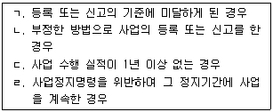
- ㄱ, ㄴ
- ㄱ, ㄷ
- ㄴ, ㄷ
- ㄴ, ㄹ
- ㄷ, ㄹ
(정답률: 46%)
68. 항만운송사업법령상 항만운송관련사업에 관한 설명으로 옳지 않은 것은?
- 통선으로 본선과 육지 간의 연락을 중계하는 행위를 하는 사업은 항만용역업에 속한다.
- 선박운항에 필요한 물품 및 주식ㆍ부식을 공급하고 선박의 침구류 등을 세탁하는 사업은 물품공급업이다.
- 본선을 경비하는 행위를 하는 사업은 항만용역업에 속한다.
- 컨테이너를 수리하는 사업은 컨테이너수리업이다.
- 선박에서 사용하는 맑은 물을 공급하는 행위를 하는 사업은 물품공급업이다.
(정답률: 알수없음)
69. 항만운송사업법령상 항만운송사업에 관한 설명으로 옳은 것은?
- 선적화물을 싣거나 내릴 때 그 화물의 용적 또는 중량을 계산하거나 증명하는 일을 하는 사업은 검수사업이다.
- 선적화물을 싣거나 내릴 때 그 화물의 개수를 계산하거나 그 화물의 인도ㆍ인수를 증명하는 일을 하는 사업은 검량사업이다.
- 항만하역사업과 검수사업, 감정사업 및 검량사업 모두를 영위하려는 자는 사업을 통합하여 항만운송사업으로 해양수산부장관에게 등록할 수 있다.
- 항만하역사업과 검수사업은 항만별로 등록한다.
- 감정사업과 검량사업은 취급화물별로 시ㆍ도지사에게 등록한다.
(정답률: 59%)
70. 유통산업발전법령상 국가기술표준원장이 물류설비의 표준이 되는 인증규격등을 정하여 종류별로 구분하여 고시하는 경우 그 종류별 구분에 해당되지 않는 것은?
- 수송ㆍ배송설비
- 보관ㆍ하역설비
- 분류ㆍ포장설비
- 물류정보화설비
- 물류공동화설비
(정답률: 알수없음)
71. 유통산업발전법령상 산업통상자원부장관이 지정할 수 있는 사항이 아닌 것은?
- 우수도매배송서비스사업자
- 우수체인사업자
- 물류설비인증기관
- 공동집배송센터
- 유통연수기관
(정답률: 19%)
72. 유통산업발전법령상 유통업상생발전협의회가 특별자치시장ㆍ시장ㆍ군수ㆍ구청장에게 의견을 제시할 수 있는 사항으로 옳은 것을 모두 고른 것은?
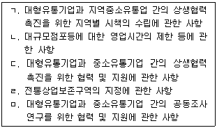
- ㄱ
- ㄱ, ㄴ
- ㄱ, ㄴ, ㄷ
- ㄱ, ㄴ, ㄷ, ㄹ
- ㄱ, ㄴ, ㄷ, ㄹ, ㅁ
(정답률: 64%)
73. 유통산업발전법령상 대규모점포등개설등록신청서에 첨부하여 제출하여야 하는 서류가 아닌 것은?
- 건축물의 건축 등에 관한 허가서
- 사업계획서
- 상권영향평가서
- 지역협력계획서
- 대규모점포개설지침서
(정답률: 34%)
74. 유통산업발전법령상 산업통상자원부장관이 공동집배송센터 개발촉진지구를 지정한 경우 고시하는 내용이 아닌 것은?
- 촉진지구의 명칭
- 촉진지구의 위치 및 면적
- 주요시설의 설치계획
- 사업시행기간(착공 및 준공예정일을 포함한다)
- 촉진지구의 개발주체 및 개발방식
(정답률: 10%)
75. 철도사업법령상 사업계획을 변경하려는 철도사업자가 국토교통부장관의 인가를 받아야 하는 중요사항을 변경하는 경우에 해당하지 않는 것은?
- 철도사업약관을 변경하는 경우
- 철도이용수요가 적어 수지균형의 확보가 극히 곤란한 벽지 노선의 철도여객운송서비스의 종류를 변경하는 경우
- 여객열차의 운행구간을 변경하는 경우
- 사업용철도노선별로 여객열차의 정차역을 신설 또는 폐지하는 경우
- 사업용철도노선별로 여객열차의 정차역을 10분의 2 이상 변경하는 경우
(정답률: 31%)
76. 철도사업법령상 철도사업의 휴업 또는 폐업에 관한 설명으로 옳지 않은 것은?
- 철도사업자가 그 사업의 전부를 폐업하려는 경우에는 국토교통부장관의 허가를 받아야 한다.
- 철도사업자가 선로 또는 교량의 파괴, 철도시설의 개량, 그 밖의 정당한 사유로 휴업하는 경우에는 국토교통부장관에게 신고하여야 한다.
- 철도사업자의 휴업기간은 선로 또는 교량의 파괴, 철도시설의 개량, 그 밖의 정당한 사유로 휴업하는 경우를 제외하고는 3개월을 넘을 수 없다.
- 철도사업자는 그 사업의 일부를 휴업하려는 경우에는 휴업하는 사업의 내용과 그 기간 등을 인터넷 홈페이지, 관계 역ㆍ영업소 및 사업소 등 일반인이 잘 볼 수 있는 곳에 게시하여야 한다.
- 철도사업자가 휴업에 대하여 허가를 받거나 신고한 휴업기간 중이라도 휴업 사유가 소멸된 경우에는 국토교통부장관에게 신고하고 사업을 재개할 수 있다.
(정답률: 알수없음)
77. 철도사업법령상 국토교통부장관이 철도사업자의 면허를 반드시 취소하여야 하는 경우는?
- 철도사업자가 면허받은 사항을 정당한 사유 없이 시행하지 아니한 경우
- 철도사업의 면허기준에 미달하게 되었음에도 불구하고 철도사업자가 3개월 이내에 그 기준을 충족시키지 못한 경우
- 철도사업자가 고의 또는 중대한 과실에 의한 1회 철도사고로 사망자 10명 이상이 발생하게 된 경우
- 철도사업자가 사업 경영의 불확실 또는 자산상태의 현저한 불량이나 그 밖의 사유로 사업을 계속하는 것이 적합하지 아니할 경우
- 철도사업자가 국토교통부장관이 철도사업의 질서를 확립하기 위하여 면허에 붙인 부담을 위반한 경우
(정답률: 20%)
78. 철도사업법령상 공동운수협정 및 양도ㆍ양수 또는 합병에 관한 설명으로 옳지 않은 것은?
- 철도사업자는 다른 철도사업자와 공동경영에 관한 계약이나 그 밖의 운수에 관한 협정을 체결하려는 경우에는 국토교통부령으로 정하는 바에 따라 국토교통부장관에게 신고하여야 한다.
- 철도사업자는 그 철도사업을 양도ㆍ양수하려는 경우에는 국토교통부장관의 인가를 받아야 한다.
- 철도사업자는 다른 철도사업자 또는 철도사업 외의 사업을 경영하려는 자와 합병하려는 경우에는 국토교통부장관의 인가를 받아야 한다.
- 전용철도의 운영을 양도ㆍ양수하려는 자는 국토교통부령으로 정하는 바에 따라 국토교통부장관에게 신고하여야 한다.
- 전용철도의 등록을 한 법인이 합병하려는 경우에는 국토교통부령으로 정하는 바에 따라 국토교통부장관에게 신고하여야 한다.
(정답률: 알수없음)
79. 농수산물 유통 및 가격안정에 관한 법령상 농수산물 집하장의 설치ㆍ운영에 관한 설명으로 옳지 않은 것은?
- 생산자단체는 농수산물을 대량 소비지에 직접 출하할 수 있는 유통체제를 확립하기 위하여 필요한 경우에는 농수산물집하장을 설치ㆍ운영할 수 있다.
- 국가와 지방자치단체는 농수산물집하장의 효과적인 운영과 생산자의 출하편의를 도모할 수 있도록 그 입지 선정과 도로망의 개설에 협조하여야 한다.
- 생산자단체가 운영하고 있는 농수산물집하장 중공판장의 시설기준을 갖춘 집하장을 공판장으로 운영하고자 하는 경우 시ㆍ도지사에게 등록하여야 한다.
- 생산자관련단체가 농수산물집하장을 설치ㆍ운영하려는 경우에는 농수산물의 출하 및 판매를 위하여 필요한 적정 시설을 갖추어야 한다.
- 농업협동조합중앙회ㆍ산림조합중앙회ㆍ수산업협동조합중앙회의 장은 농수산물집하장의 설치와 운영에 필요한 기준을 정하여야 한다.
(정답률: 19%)
80. 농수산물 유통 및 가격안정에 관한 법령상 농수산물의 생산조정 및 출하조절에 관한 설명으로 옳지 않은 것은?
- 주산지는 시ㆍ도지사가 지정한다.
- 농림축산식품부장관 또는 해양수산부장관은 예시 가격을 결정할 때에는 해당 농산물의 농림업관측, 주요 곡물의 국제곡물관측 또는 수산물의 수산업 관측 결과, 예상 경영비, 지역별 예상 생산량 및 예상 수급상황 등을 고려하여야 한다.
- 해양수산부장관은 한국해양수산개발원을 수산업관측 전담기관으로 지정한다.
- 농림축산식품부장관 또는 해양수산부장관은 비축용 농수산물을 도매시장 및 공판장에서 수매하여야 한다.
- 농림축산식품부장관 또는 해양수산부장관은 비축용 농수산물을 수입하는 경우 국제가격의 급격한 변동에 대비하여야 할 필요가 있다고 인정할 때에는 선물거래를 할 수 있다.
(정답률: 알수없음)